| 日付 | 2017年8月17日（木） |
|---|---|
| メンバー | 家族（妻、長女・6歳、長男・4歳） |
| アクセス | 車 |
今年の夏はとにかく天気が悪い！
盆休みの前半は帰省し、後半は旅行に行く計画だったのに
天気予報を見てみると、雨か曇予報ばっかり…
なんと、東京では8月に入って雨の降らなかった日が無いとか…
仕方がないので、宿には申し訳ないが旅行をキャンセルすることにする。
結構なキャンセル料は発生してしまったが…
さて、4日間の休日にどこにも出かけないと、子供たちが発狂してしまうので
替わりに清水公園という場所に行ってみることにする。
アスレチックが面白いという事で、非常に有名な公園だ。
ガラガラの駐車場に車を停めようとすると、管理人に声をかけられ
アスレチックはオープン見合わせ中との情報をもらう。
昨日は雨で閉鎖されていたが、今日は大丈夫だろうと思っていたのだが、
今日の早朝に降った雨で木が濡れているらしい。早速、嫌な予感が…
アスレチックが開くまでの間、まずは巨大迷路に行ってみることにする。
チケットを購入して早速入場！
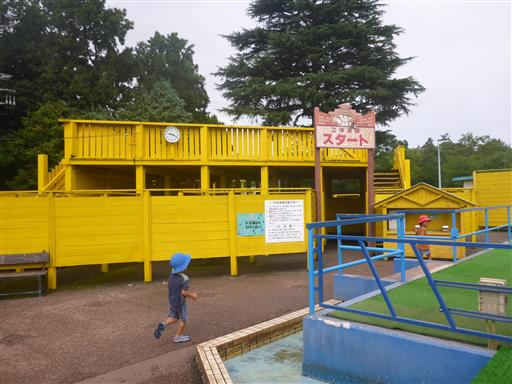
子供たちはすぐに走り出す。
初めての本格的な巨大迷路。ルールは理解してるんだろうか？
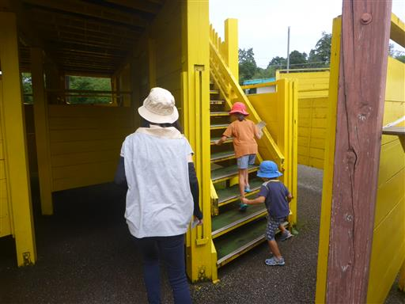
高台から迷路を見下ろす。
上から見ると迷路の構造がある程度把握できるが、
目で追うのに結構時間がかかってしまうため、
走って足で稼いだ方が効率的だろう。
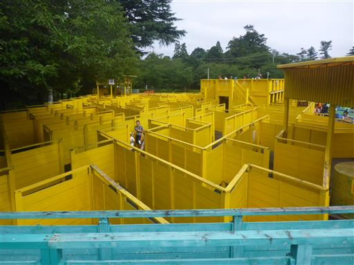
巨大迷路は黄色いゾーンと水色のゾーンに分かれていて、
水色ゾーンは上り下りがあるため、それなりに疲れる…
最初は単独行動をして最速でゴールする予定だったが、
途中で道に迷ったため、子供たちに付いていくことにする。
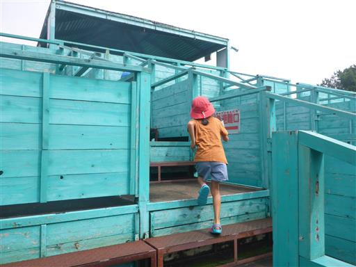
4つのポイントでスタンプを押し、階段を下りるとゴールが見えてくる。
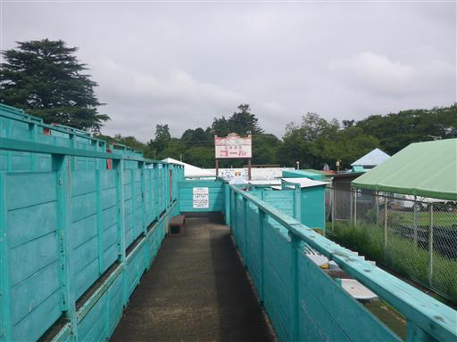
無事ゴール。所要時間は15分。
標準タイムは30分程度らしいので、そこそこ良いタイムだった。
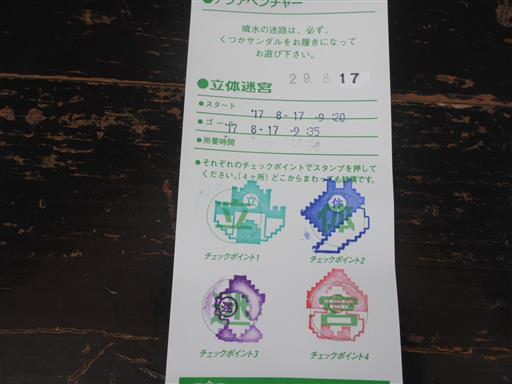
お次は巨大迷路に併設されているアクアベンチャー。
噴水の壁が行く手を阻む。足元も水たまりで、正に水の迷路だ。
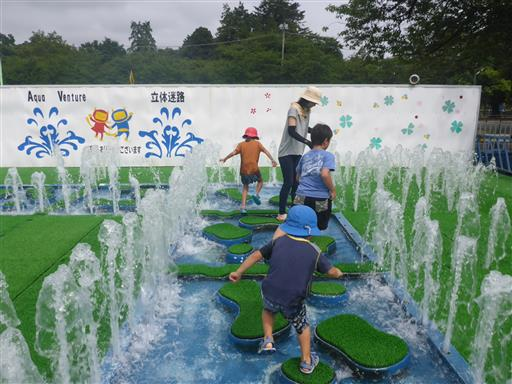
噴水は一定時間で止まったり吹き出したりを繰り返すため、
迷路の形は刻一刻と変わっていく。
バックで流れている音楽が迷路の形が変わるタイミングで変わるのだが
単音の電子音でかなり安っぽい。
選曲は「恋はみずいろ」「イエスタディ」「エーデルワイス」。暗い！
迷路全体が切ない雰囲気に包まれている…
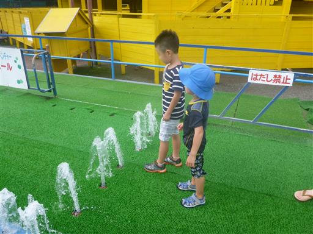
子供たちはそのうち水で遊び出し始めたため、全身びしょびしょ。
まあ、こうなる事は分かっていたが…
パンフレットには「水しぶきを抜けると、そこには巨大な立体迷路が…」と書かれているが、
どう考えても立体迷路の後に水の迷路をやった方がよさそうだ。
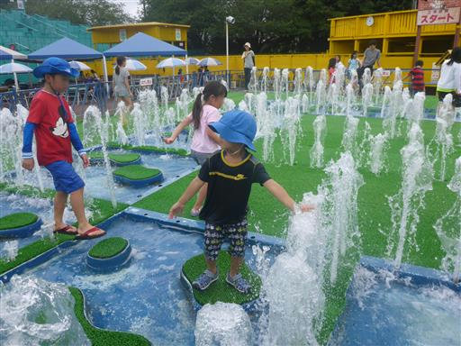
迷路を終えたところで、本日のアスレチックはオープンしないことが決定される。
今年の夏は本当についていない…
仕方がないのでポニー牧場に向かう。
娘がとても小さなカタツムリ（の殻？）を見つけて見せてくれた。
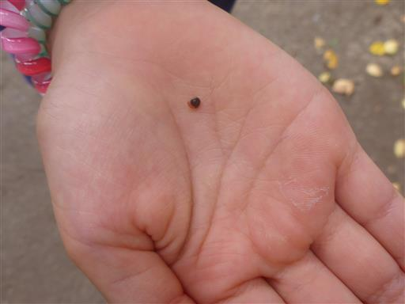
餌を買って持っていくと、ヤギがおねだりしてきて、かなり迫力がある。
圧迫感がありすぎて、子供たちは後ずさりしてしまう。
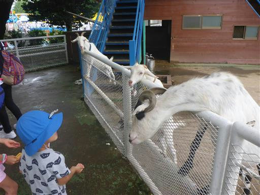
それでも餌をあげると器用に食べてくれる。
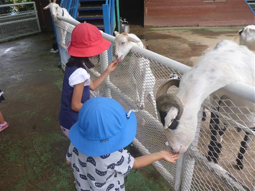
お次はポニーの乗馬体験。ちょっと列ができている。
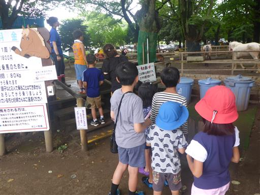
馬に乗ってぐるっと一周。毎年、保育園の移動動物園で乗っているため慣れたものだ。
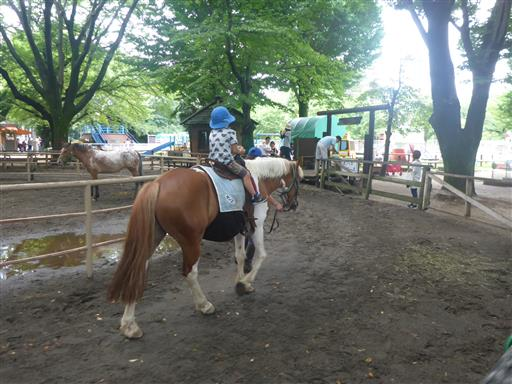
娘が列の途中で突然馬に乗るのを嫌がったため、代わりに妻が乗馬。
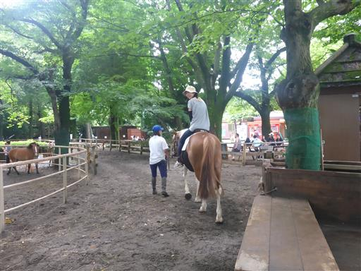
乗馬後は牧場内にある遊具で遊ぶ。
娘はカタツムリ形の遊具を器用に登っていく。まるでお猿さんだ。
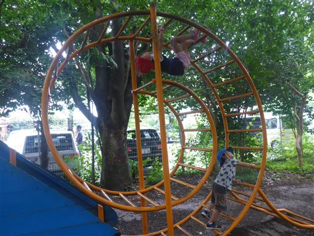
大人は狭くてちょっと厳しい…
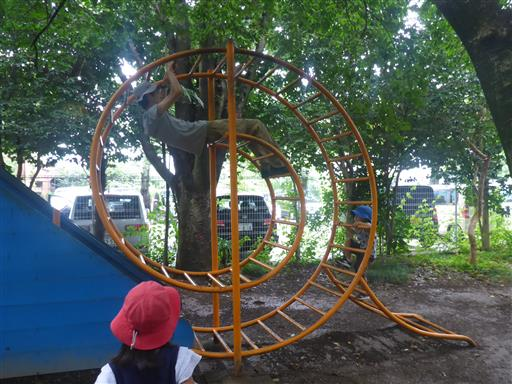
昼食をとったら公園内を散策することにする。
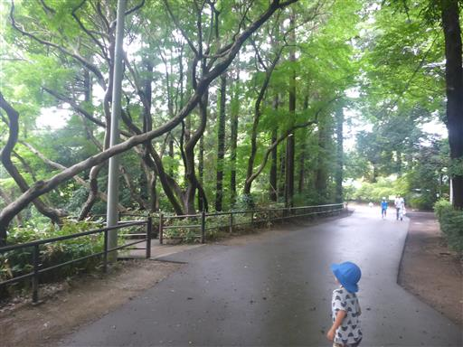
公園内は鬱蒼とした森に覆われている。
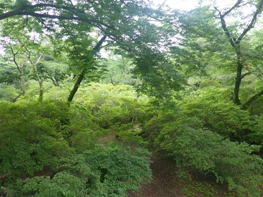
しばらく歩くと水上アスレチックコースの畔に出てくる。
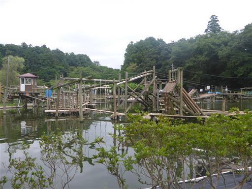
魅力的なコースの数々。これができないのは残念。
水上コースは小学生～なので、息子が小学生になったらまた来てみよう。
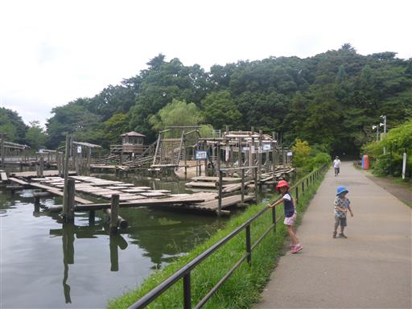
娘がモルモットに餌をあげたいと言っているため、再びポニー牧場に戻ってくる。
人参やキャベツを齧る姿はとっても可愛らしい。
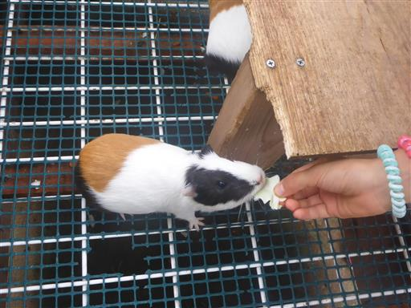
こちらはウサギ。
ウサギはお腹が一杯なのか、あまり多くは食べてくれない。
休日はいつも満腹なのだろう。
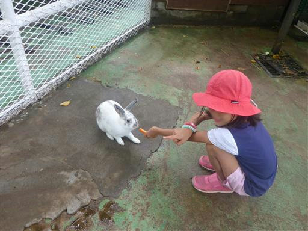
ヤギはやっぱりちょっと怖い。
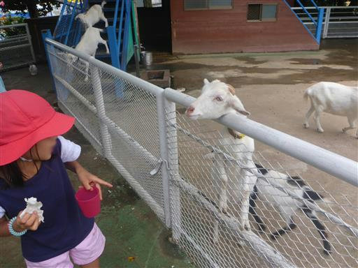
小さいヤギに餌をとられた一番大きなヤギが喧嘩を仕掛けている。
食べ物の恨みは怖いのだ。
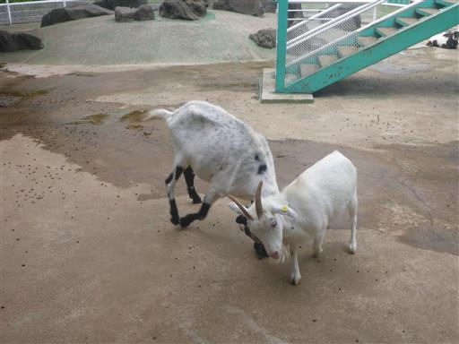
しばらくすると、仲良く餌を追いかけている。
首が伸びているのは、もちろん餌がある方向だ。
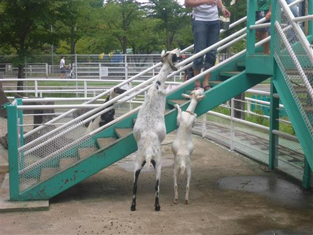
最後にもう一度、周辺の遊具で遊んでから帰ることにする。
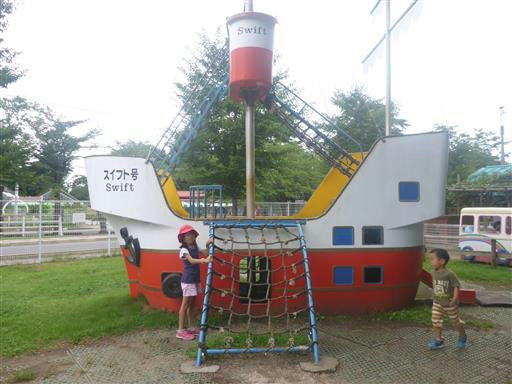
帰る間際に不思議な虫を発見。穴を何度も出入りしているハチのような虫だ。
帰って調べてみると、どうやらクロアナバチという種類らしい。
地面はあちらこちら穴だらけだ。
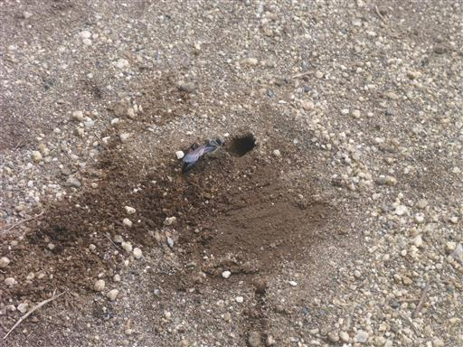
駐車場に戻ってくる。アスレチックが閉まっているからか、相変わらずガラガラだ。
真ん中の大きな木が、よく目立っている。
思惑通りに事が進まず残念なお出かけとなったが、
子供たちはそれなりに楽しめたようだ。
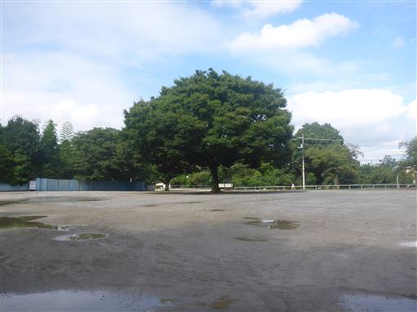